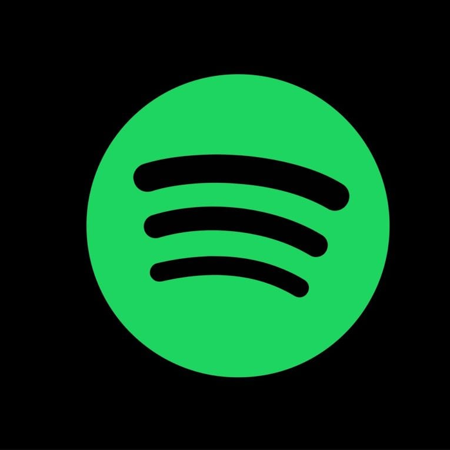

Without even realizing it, music has started to take over our lives. It is all around us, serving as an escape for many. This only became even more prominent due to digital music streaming services that gives us access to a variety of music with just a simple search.
Spotify is one of the most popular streaming services, with over 551 million users. The reason for its popularity is the fact that Spotify brands themselves on having personalized features, such as using data and creating playlists for users, allowing them to discover new music that aligns with their taste!
One of their most popular and anticipated features is the yearly Spotify Wrapped! Spotify Wrapped was released by the brand in 2016. It provides users with a visualization of their compiled data, including, their top artists and total minutes someone spent listening to music.
70,851 Minutes
Pop
Looking at these statistics, I can learn so much about the type of music I listen to. However, when looking at it, I realized that it did not accurately showcase when I was listening to these songs the most. While I did listen to Cardigan by Taylor Swift, I did not listen to it the whole year. I mainly listened to this in the winter and All Your’n by Tyler Childers in the Summer.
The reason for this is that I, like many people, associate songs and lyrics with certain seasons. Studies showcase that artists use certain lyrics and beats to claim “Song of the Summer” status. On the other hand, people tend to appreciate more meaningful lyrics and slower tempo music during the Winter. When using Spotify, I have many separate playlists. After taking a look, I realized that I have both a Summer and Winter playlist, both giving off a very different vibe.
Take a glimpse into my Winter Music taste.
Take a glimpse into my Summer Music taste.